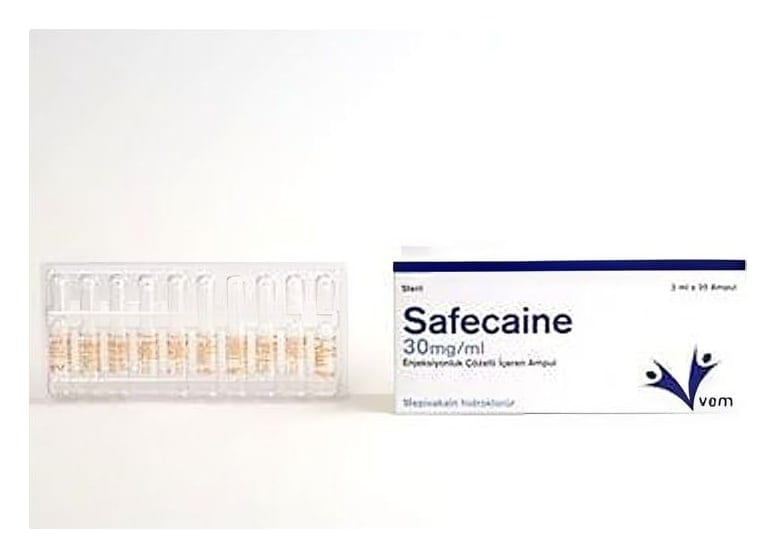

Safecaine 30 mg/ml Enjeksiyonluk Çözelti İçeren Karpül, 50 Tablet

Ne için kullanılır
KT · Bölüm 1SAFECAİNE, işlem sırasında ağrıyı kesen mepivakain hidroklorür içerir ve lokal anestezikler olarak adlandırılan ilaç grubuna dahildir. SAFECAİNE, bir kutuda 1,8 mL çözelti içeren 1,8 mL’lik 50 adet karpüllerde kullanıma sunulmaktadır. Yetişkin, ergen ve 4 yaşın (yaklaşık 20 kg vücut ağırlığı) üzerindeki çocuklarda diş operasyonları öncesinde veya sırasında, ağrıyı önlemek veya en aza indirmek için lokal veya bölgesel his kaybı oluşturmada (uyuşturma) kullanılır.